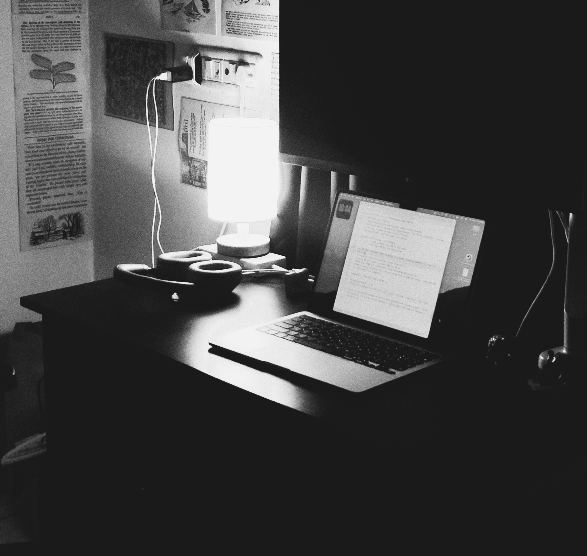

No one blogs anymore

No one seems to blog anymore. I used to find small blogs everywhere back in the day, people documenting their day, something they learnt, or somewhere they had been. It feels like it's a lost art now.
It is (was) a Thursday evening. I was tired of watching YouTube. Everyone seems to be wanting to own part of my brain there. So I turned off the lights of my room and the only light was the small desk lamp I have. My laptop, sitting there on the desk, looked inviting to write on.
I also have this